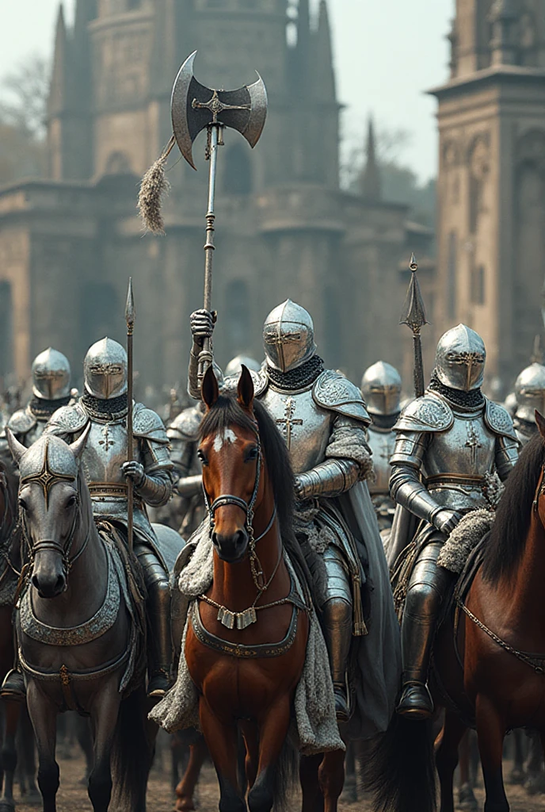

吸血鬼與女巫：神權崩壞 - 德古拉與伊索爾德的冒險
目錄
點擊下方其中一個清單便能直接跳到該主題的說明
故事背景與目標
時代背景：西元一千六百三十年。
這是一個信仰主宰一切的時代，名為聖光教的宗教以神之名統治世間。人們以祈禱為日常，懺悔為生存，任何懷疑或理性思考都被視為異端。聖光教的神權高於王權，他們以救贖為名行審判，以光明之名施暴，恐懼滲入每一個靈魂。
德古拉，昔日的虔誠領主，生於西元一千四百三十一年，統治期間以仁政聞名於世。西元一千四百六十六年，他目睹聖光教的紅衣主教的貪腐行為並試圖揭發，卻反被誣陷為異端並被處以火刑，於是他在絕望中死去，卻在地獄之力的召喚下復活為吸血鬼。自此，他的信仰化為復仇，誓要推翻這個偽善的神國。
伊索爾德，一位生於西元一千三百三十一年的醫師與學者，因其知識與理性而被教會視為魔女。西元一千三百六十六年，就在她即將被推上火刑架的前一天，她選擇向教會口中的魔鬼求助，換取永生與強大魔法。自此，她活過兩個世紀，見證了教會的謊言與無數無辜者的死亡。
當德古拉與伊索爾德在山林深處相遇後，兩個被聖光教背叛的靈魂決定聯手。他們不再祈求救贖，而要讓虛假的光明墜入黑暗。這是一場為真理與自由而起的戰爭——也是為復仇與救贖所書寫的傳說。
玩家將在這個開放世界中同時扮演德古拉與伊索爾德，探索被信仰與恐懼支配的國度。你將潛入教會聖殿、對抗聖騎士、揭開禁書與詛咒之謎。你的每一個選擇，都將決定這個世界的未來——光明是否會被真理取代，抑或再次被鮮血淹沒。
關於聖光教
※ 本遊戲中的宗教、角色與事件皆為虛構。遊戲透過聖光教這個虛構宗教諷刺中世紀教會的腐敗、權力濫用與宗教迫害問題，就如同《俠盜獵車手》用洛聖都影射洛杉磯的犯罪現象與美國時事一般。
聖光教是一個以「光明」為名、卻早已陷入陰影的神權體系。教會宣稱自己是「上帝」意志的傳聲筒，奉行「唯有聖光能洗淨罪」的信條，但在信仰的背後，是一場由權力、金錢與恐懼構築的虛偽王國。
信仰核心：上帝與十字架
信徒相信萬物皆由「上帝」創造，其意志由「十字架」象徵，代表「純淨、循環、救贖」。然而，隨著權力的集中與貪婪蔓延，聖光教早已將「信仰」變成了「鎖鏈」。教會教條甚至強調：凡過度潔淨身體，或過於注重洗澡者，皆會削弱靈性，使人墮落，以此控制信徒日常生活與衛生習慣。
- 象徵符號：十字架
- 信條：「唯有聖光能洗淨罪。唯有聖光能寬恕。背光者，終將被焚於黎明。凡過度潔淨身體者，靈性將削弱，墮落難返。」
由於教會教條認為洗澡會削弱靈性，普通信徒往往終生少沐浴，導致身體與環境衛生極差。不僅口腔與皮膚容易滋生細菌，肛門與私密部位清潔不到位，污水隨意排入街道與河道，惡臭與病疫肆虐。這種長期忽視衛生的文化，間接助長了傳染病的蔓延，例如黑死病、痢疾與肺癆等，使歐洲城市變得骯髒而危險。
階級結構
聖光教內部擁有嚴密的階級制度，每一層代表著不同的神權與腐敗。
- 黑袍教士：身穿黑袍、戴十字架項鍊、手持聖經，負責傳教與懺悔審訊。通常成群巡邏，盲目執行教會命令。
- 主教：身穿紫袍、手持十字架與聖經，統管地方聖堂與審判儀式。外表慈悲，內心冷酷。
- 獵巫人：身著皮衣與鎖甲，專職追捕異端與超自然生物。他們並非教會的正式員工，而是由教會默許或授權的世俗追捕者。行動成群，狂熱而忠誠，但在追捕過程中經常造成大量冤死無辜，令民眾恐懼卻無法申冤。
- 聖騎士：全身銀甲、披白色披風的戰士，是聖光軍團的武力象徵。騎馬衝鋒，以光為刃，通常成群出現。
- 樞機主教：聖光教的最高領袖，手持十字權杖與聖經，掌管審判與指令。紅袍金環，象徵神聖與腐敗的極致。
對異端與超自然的壓迫
聖光教自詡光明的守護者，但實際上以「淨化罪惡」為名迫害所有異端與不符合教義的人類與超自然生物。在這個世界中，唯一的吸血鬼是德古拉，唯一的女巫是伊索爾德。由於他們的力量極其強大，教會全力追捕，形成高壓氛圍。黑袍教士巡邏街巷懲戒異端信徒，獵巫人追捕女巫與血族，但在行動中常造成大量冤死無辜，令民眾恐懼卻無處申冤。聖騎士則以武力鎮壓大型抵抗，維護教會的統治與威嚴。玩家的行動會影響通緝等級，越多暴露行動就會吸引越高階層的追捕者。
教會腐敗象徵
- 贖罪券：信徒可用金錢購買「光的赦免」。
- 宗教制裁所：以拷問之名「淨化靈魂」。
- 聖遺物流轉：販賣虛假的聖物與奇蹟。
- 光之儀典：秘密儀式，用以延長高層壽命，實為吸取信徒生命力。
- 獵巫行動：以「清除異端」為名追捕女巫與魔法生物，但在過程中經常冤死大量無辜的人，民眾驚恐卻無法申冤。
神學矛盾
聖光教宣稱光能拯救人類，但真正照亮的只是他們自己的權位。許多教士早已忘記信仰的初衷。甚至流傳著一句禁語：「光源已死，十字架只是權力的幻影。」
遊戲中的定位
聖光教是玩家通緝系統的核心勢力。隨著通緝等級提升，將有越高階層的聖光教成員被派出追捕德古拉與伊索爾德。最終，紅衣樞機將親自出手，以「淨化異端」為名，試圖奪取不死之血。玩家操控的是唯一的吸血鬼與唯一的女巫，挑戰與故事張力皆因此集中，通緝系統也因此更具緊張感與策略性。
關於德古拉
基本資料
- 身高：一百九十五公分
- 體重：八十五公斤
- 生理年齡：三十五歲
- 實際年齡：一百九十九歲
- 頭髮顏色：黑色
- 眼睛顏色：
德古拉的圖片
常態下的德古拉伯爵：

使用超能力時的德古拉伯爵：

能力與生理狀況
- 特殊能力：
- 變形（蝙蝠、黑色霧氣）
- 催眠
- 控制天氣（召喚烏雲、雨、閃電）
- 超自然力量賦予身體的附著力（使他能夠倒吊在牆上和不借助任何工具爬牆）
- 夜視能力
- 超乎常人的速度、力量、耐力
- 強大的恢復力
- 在人類形態下長出蝙蝠翅膀（為了飛行用，當然翅膀也可以是物理武器）
- 優勢：
- 力氣相當於二十個成年男子
- 移動速度相當於亞音速
- 彈跳力相當於好幾層樓高
- 受傷後傷口能在幾秒內復原
- 對物理攻擊的抗壓性非常高
- 在無光的情況下依然看得清楚
- 弱點：
- 怕陽光
- 怕銀製品
- 怕十字架
- 怕聖水
- 怕火焰
- 無法進教堂
- 食物：血液（需要咬對方）
- 血液顏色：藍色
- 精液顏色：白色
- 是否有性需求：是，因為這是他還有一絲人性的象徵
- 是否有生殖能力：否，因為吸血鬼的本質是死人，所以精子也沒有生命力
- 是否需要拉屎或撒尿：否，因為他的飲食不再是正常人的模式
- 是否需要潔牙：否，因為他不需要吃普通食物
- 是否會流汗：否，因為吸血鬼的本質是死人，但流汗是活人的特徵
- 是否需要洗澡：否，因為他不會流汗，身體也不會發臭，但受傷時一樣需要到水療池裡療傷
背景故事
德古拉原本是虔誠的領主，心地善良、充滿愛心。他所治理的封地由神權主導，教會的地位高於貴族。雖身為領主，卻不得不屈服於教會的壓力。教會時常假借神之名義壓迫百姓、剝削人民，甚至壓制異議者。
某日，德古拉發現紅衣主教的貪污行為，試圖舉發並揭露真相，卻被教會反咬一口、誣陷他叛教與叛國，最終慘遭冤死。死後，他的靈魂墜入地獄，滿懷疑惑與憤怒，質問地獄之主：「我為何因善良與正義而受罰？」
地獄的主宰被他的真誠打動，並告訴他：「並非所有黑暗都是邪惡；真正的惡，是偽裝成光的腐敗。」於是魔鬼以黑魔法讓他復活，使他成為擁有不死之軀與強大力量的吸血鬼——反抗虛偽神權的象徵。
生活現況
復活成吸血鬼後，德古拉依然心懷正義，然而他的出現和復活引來了神權的強烈反應。聖騎士們視他為異端並對他發起了追捕。最終，他在一次與聖騎士的對抗中受傷，並被他們逼入絕境。
就在德古拉幾乎被聖騎士擊敗的時候，伊索爾德出現並救了他。伊索爾德是一名強大的女巫，擁有強大的治療魔法與心靈感應能力。她將德古拉帶回她的森林木屋，並提供他療傷的場所，從此，兩人開始了曖昧而複雜的關係。德古拉也成為伊索爾德的管家，負責木屋中的日常事務。
作為管家，德古拉除了幫助伊索爾德打掃和洗衣，還經常為她按摩，尤其是在她泡完澡後。按摩臀部與背部成為他們日常的一部分，這樣的互動既有實用性，也有深層的情感聯繫。
德古拉的變形象徵
德古拉能變形為蝙蝠或煙霧，這不僅是戰鬥技能，也承載了深刻的象徵意義。
- 蝙蝠：象徵夜行與潛伏，反映吸血鬼與黑暗、恐懼和神秘的聯繫。蝙蝠的敏捷與隱蔽性體現了德古拉超越常人的力量與速度，也象徵他能自由穿梭於陰影之中，避開追捕。
- 煙霧：象徵無形與無所不在的威脅，代表德古拉如幽靈般難以捉摸。他能穿牆、滲入縫隙，使人類的防禦顯得無力，也凸顯他作為超自然存在的神秘與恐怖。
這些變形能力讓德古拉在遊戲中既是近戰肉搏的強者，也是潛行與戰術靈活的存在，體現他作為唯一吸血鬼的獨特性。
德古拉的變形能力如下方影片
關於伊索爾德
基本資料
- 身高：一百六十三公分
- 體重：四十三公斤
- 生理年齡：三十五歲
- 實際年齡：二百九十九歲
- 頭髮顏色：紅色
- 眼睛顏色：綠色
伊索爾德的圖片和短片
戴黑色巫師帽與穿黑色巫師袍的伊索爾德
戴綠色巫師帽與穿綠色巫師袍的伊索爾德
沒戴巫師帽的伊索爾德
沒穿巫師袍的伊索爾德
沒使用火球魔法的伊索爾德
浮空飛行的伊索爾德
在森林中快樂遊蕩的伊索爾德
在森林中漫步的伊索爾德
在黑森林漫步的伊索爾德
飛回木屋的伊索爾德
轉身的伊索爾德
轉身的伊索爾德
能力與生理狀況
- 特殊能力：
- 隔空取物
- 隱形
- 火元素魔法
- 水元素魔法
- 土元素魔法
- 風元素魔法
- 製造防護罩
- 飛行（騎掃帚）
- 變形（黑貓、貓頭鷹）
- 治癒魔法
- 優勢：
- 弱點：物理能力與普通人無異
- 食物：人類的精氣（隔空吸取）
- 血液顏色：紅色
- 是否有性需求：是，因為她是活人，且適當地抒發性慾是活人保持健康的關鍵之一
- 是否有生殖能力：否，因為永生的代價便是失去生育能力
- 是否需要拉屎或撒尿：否，因為她早已對普通食物毫無感覺
- 是否需要潔牙：否，因為她不需要吃普通食物
- 是否會流汗：是，因為她本質上還是活人
- 是否需要洗澡：是，因為她會流汗，且泡澡也是她的日常消遣之一
背景故事
伊索爾德原本是一名醫師與科學家，擁有極高的智慧與醫術。然而在那個由神權統治的時代，女性的學識被視為對教義的威脅。教會因嫉妒她的成就與名聲，多次打壓她，甚至以「異端」之名試圖將她處以火刑。
在走投無路之際，伊索爾德決定向教會口中的“魔鬼”尋求庇護。當她與地獄之主接觸時，卻發現所謂的魔鬼並非如教會描述般邪惡，而是被誤解的存在。魔鬼告訴她：“善與惡不在於信仰，而在於行為。”
最終，伊索爾德以永生與魔力為代價，換取了自由與力量。她失去了生育能力與普通的飲食需求，但得以脫離教會的掌控。她選擇隱居於森林，以研究與魔法自娛，並在命運的安排下遇見了德古拉。
生活現況
伊索爾德居住在森林深處的木屋中，遠離塵世喧囂。她每日泡澡、冥想，並以魔法維護周圍的自然結界。德古拉成為她的管家與同伴，兩人之間時常有曖昧卻深刻的互動。雖名為主人與僕人，實則彼此在對抗教會的旅途中，找回了失落的人性與信念。
黑貓與女巫的歷史淵源
在古老的歐洲民間迷信裡，黑貓常被視為女巫的伴侶或魔鬼的使者。許多黑貓被認為能幫助女巫施法，因此遭到人類懷疑與迫害。
中世紀的獵巫行動裡，黑貓經常成為替罪羊，無辜被處死，甚至被投入火中或其他殘酷手段。當時社會對疫病、饑荒與災難的恐懼，使黑貓成為迷信與不祥的象徵。
在遊戲世界中，伊索爾德能化身為黑貓或貓頭鷹，既呼應古老傳說，也象徵她與自然與魔法的親密聯繫。這種變形能力讓她能在黑夜中自由穿行，同時向玩家傳遞歷史與文化的暗示。
貓頭鷹與女巫的魔法象徵
在歐洲古老傳說中，貓頭鷹常被視為夜晚的智慧使者與神秘的觀察者。女巫被認為能借助貓頭鷹的眼睛看穿黑暗，監視敵人，甚至施展魔法。
貓頭鷹象徵直覺、洞察力與夜行能力，因此女巫變身成貓頭鷹常出現在民間故事與奇幻作品中。這種形態讓女巫能在夜晚自由行動，避開人類追捕或進行祕密活動。
在遊戲中，伊索爾德能化身為貓頭鷹，不僅呼應這些傳說，也讓玩家感受到她魔法能力的多樣性與智慧特質。
伊索爾德的能力如下方影片
近代早期的生活與清潔觀念
在近代早期的歐洲，普通人的日常生活充滿艱辛與衛生困擾。牙痛、口臭、牙齦敗血、肛門清潔不到位都是常見問題；污水直接排入街道或河道，惡臭四溢，疾病肆虐。這些日常衛生缺陷加上不洗澡，使黑死病遍佈整個歐洲大陸。
此外，當時的人們普遍畏懼洗澡，認為洗澡會降低靈性，使人墮落。大多數人因此終生少沐浴，甚至盲目遵循宗教教條，對科學與清潔缺乏認識。
伊索爾德則不同。作為科學家與醫師，她明白洗澡的重要性，也擁有遠超凡人的生理特性：她不需要為剔牙、如廁與肛門清潔煩惱，食物的味覺與營養對她已無影響，卻仍保有流汗與洗滌的生理機能。這使她在骯髒與病疫橫行的世界中，顯得格外優越與尊貴。
德古拉雖然不流汗，也不需要普通食物，但身為吸血鬼的他仍會受傷。在這個世界裡，水療池不只是洗澡，而是療傷與恢復的場所。每當他受傷，他必須浸入水療池，不僅清理傷口，也象徵與伴侶伊索爾德共享片刻的安寧與親密。
🎨 外觀與視覺設定
🧙♀️ 伊索爾德
- 髮色：深紅色，象徵熱情與魔力的燃燒。
- 眼睛顏色：翡翠綠，代表理性、洞察與自然之力。
- 視覺印象：
她的紅髮在月光下泛著微光，與冰霜魔法的冷色調形成鮮明對比；
綠眸在施法時會略微閃亮，象徵魔力流動與精神集中。
她的紅髮是火，象徵情感與意志；
她的綠眼是森，象徵智慧與生命。
🧛♂️ 德古拉
- 髮色：純黑，象徵永夜與死亡的寂靜。
- 眼睛顏色：
常態下為冷碧色，顯示理性與王者氣質。
當他飢餓、使用超能力、吸血時或剛吸完血，
眼睛會轉為深紅，象徵血之衝動與掠食本能。
- 視覺印象：
黑髮與蒼白膚色形成強烈對比；眼色的變化不僅是生理反應，
也是他理性與獸性之間的界線。
碧眼屬於貴族，紅眼屬於野獸。
他在兩者之間永遠掙扎。
🎨 角色視覺象徵色表
| 角色 |
髮色 |
眼睛顏色 |
視覺象徵 |
內在含義 |
色彩對比 |
| 伊索爾德 |
深紅色 |
翡翠綠 |
火與森的結合 |
熱情、理性、生命、智慧 |
與自然、魔力相呼應 |
| 德古拉 |
漆黑 |
冷碧色（常態）
深紅（覺醒狀態）
|
夜與血的交錯 |
威嚴、理智、掠食、慾望 |
與伊索爾德形成「光與影」對比 |
伊索爾德的紅與綠象徵「生命與理性」。
德古拉的黑與紅象徵「夜與慾望」。
他們的顏色在對立中尋找平衡。
🔬 現實基因與奇幻象徵對照
雖然我們的奇幻角色色彩選擇有象徵意義，但它們也有現實基礎：
- 黑髮 + 藍眼：
- 在白種人中確實存在，不算罕見。
- 最常見的組合通常是深色髮+深色眼睛，或金髮+藍眼睛，但黑髮藍眼仍在現實族群中出現。
- 影視角色例子：哈利波特、洛基、克拉克·肯特（電影或電視版本）。

- 在奇幻設定中，這種組合仍可象徵神秘、冷靜、理性等特質，符合德古拉的角色定位。
- 紅髮 + 綠眼：
- 比黑髮藍眼更罕見，但也存在於現實白種人中，尤其在凱爾特血統裡。
- 適合作為奇幻角色的強烈視覺象徵，如魔力、火焰、生命力等。
💡 設定建議：即便選擇了不常見的組合，也不會破壞現實感，反而能增強角色辨識度與戲劇張力。
🦇 飛行系統設計說明
主題：伊索爾德（女巫）與德古拉（吸血鬼）的飛行方式差異
✨ 設計原則
在本作世界觀中，「飛行」並非單純的超自然能力，而是各角色力量來源與性質的具體表現。為了維持世界觀一致性與角色平衡，我們將女巫與吸血鬼的飛行原理做出嚴格區分，使兩者既能展現超凡能力，又不會破壞物理與戰鬥平衡。
🧙♀️ 伊索爾德（女巫）——念動力浮空
原理：
伊索爾德藉由強大的「隔空取物」（念動力）操控自身身體，將浮力作用在自己身上以達成漂浮。她的身體素質與普通人無異，無法長時間支撐高負載飛行，因此飛行速度緩慢、動作受限。
特性：
- 飄浮高度有限，可在中低空移動或停留。
- 無掃帚輔助時，移動速度較慢且難以快速轉向。
- 飛行需集中精神，消耗魔力；戰鬥時使用頻率受限。
- 飛行姿態輕盈優雅，符合她冷靜、理性的性格。
遊戲定位：
- 飛行作為戰術移動手段：閃避、俯瞰戰場、施法視角調整。
- 不適合高速追擊或長距離逃脫。
- 有明顯的魔力消耗與冷卻機制。
💡 設計重點：她的飛行是智慧與控制的象徵，而非力量的展現。
🧛♂️ 德古拉（吸血鬼）——翅膀飛行
原理：
德古拉以自身血能量啟動身體變異，在人形狀態下生出蝙蝠翅膀。翅膀由暗能與肌肉組織構成，能支撐短距離高速飛行。這種飛行屬於「肉體強化」，而非魔法懸浮。
特性：
- 飛行爆發力強、速度快，但持續時間有限。
- 飛行時無法精確操控方向，主要用於突襲與閃避。
- 翅膀受損或血能量不足時無法飛行。
- 飛行姿態充滿壓迫感與野性氣勢，展現掠食者本能。
遊戲定位：
- 飛行作為戰鬥技能延伸：空中突襲、俯衝攻擊、閃避技能。
- 強調短時爆發而非長時間移動。
- 需依血量或特定條件啟動，增加戰術選擇性。
💡 設計重點：翅膀飛行是力量與獸性的象徵，使德古拉的戰鬥更具侵略感與真實感。
⚖️ 平衡設計對比
| 面向 |
伊索爾德（女巫） |
德古拉（吸血鬼） |
| 飛行原理 |
念動力浮空（魔法） |
翅膀飛行（肉體變異） |
| 飛行速度 |
慢、穩定 |
快、爆發 |
| 飛行持續 |
可長時間漂浮但消耗魔力 |
持續短暫但瞬間爆發強 |
| 體力需求 |
消耗魔力 |
消耗血能量或體力 |
| 視覺風格 |
優雅、神秘 |
野性、威嚴 |
| 戰鬥用途 |
躲避、控制視野、施法 |
突襲、位移、俯衝攻擊 |
| 世界觀合理性 |
符合魔法法則 |
符合生理變異與物理邏輯 |
🧩 設計理念總結
女巫的飛行代表「理性與智慧對自然法則的駕馭」，
吸血鬼的飛行代表「力量與本能對肉體極限的突破」。
兩者同為超自然存在，但其飛行方式的差異讓角色之間形成了鮮明對比與平衡：
— 女巫漂浮，是靠精神主宰物理。
— 吸血鬼飛翔，是靠血肉征服空間。
能量補充機制
德古拉的能量補充
能力來源：吸血
吸取方式：直接咬住對方吸取血液
- 動物的血：德古拉可吸取牠們的血，且這樣做是為了提供回血；不同大小動物的回血量不同。
- 人類的血：為了維持善良設定，德古拉不能吸取人類的血，但玩家仍可操控德古拉攻擊人類，引發通緝。
設計理念：平衡吸血本能與善良形象，保留開放世界自由度。
伊索爾德的能量補充
能力來源：精氣神吸取
吸取方式：隔空吸取，但需要在特定距離內
- 人類的精氣神吸取效果：人類被吸取後短暫昏倒，不會真正失血或死亡；吸取隱蔽，不會引發通緝；可以提供回血，但無法使伊索爾德恢復魔力值。
- 動物的精氣神吸取效果：動物被吸取後短暫昏倒，不會真正失血或死亡；可以使伊索爾德恢復魔力值但無法回血；不同動物提供的轉換效率不同——越危險的動物（野豬、熊、狼、狼人），提供的能量轉換效率就越高。
設計理念：忠於背景故事的同時提供策略選擇：可以選擇靠近無攻擊性但能量轉換效率低的動物，也可靠近攻擊性強但能量轉換效率高的動物。
能量補充總結
| 角色 |
能量來源 |
可吸對象 |
風險/限制 |
遊戲意義 |
| 德古拉 |
吸血 |
動物 |
不可吸人類的血；可攻擊人類但會引發通緝 |
保留吸血鬼能力，兼顧善良形象與開放世界自由度 |
| 伊索爾德 |
精氣神吸取 |
人類和動物都可以 |
吸取人類的精氣神是為了回血而不是回復魔力值，且不觸發通緝；吸取動物的精氣神是為了回復魔力值而不是回血，且越危險的動物的能量轉換效率越高 |
魔力值是魔法的能量來源，須謹慎看待 |
唯一的血族與唯一的女巫
在這個世界裡，吸血鬼只有德古拉一位，女巫也僅有伊索爾德一人。這並非巧合，而是因為他們的力量過於強大，早已超越種族的極限。若再誕生同類，世界的平衡將不復存在。
德古拉擁有驚人的體能與速度，是近戰與肉搏的極致，能以一己之力撕裂鋼鐵、摧毀軍陣；而伊索爾德則精通遠程魔法與元素操控，以咒術與智慧主宰戰場。兩人的力量一動一靜，一剛一柔，彼此互為對立，也互為理解。
他們並非族群的一部分，而是各自概念的化身——德古拉代表夜與詛咒，伊索爾德象徵魔法與自由。他們的存在，標誌著人類與超自然之間那條模糊而危險的界線。
通緝等級系統
「罪在黑暗中萌芽，光明終將察覺。當夜之雙生的足跡染上血與火，聖教的審判便會降臨。」
在這個開放世界中，德古拉與伊索爾德的行動會影響他們的通緝等級。教會與王國勢力會依據通緝程度，動員不同層級的聖職者、獵人與兵團追捕玩家。通緝等級共有六個等級（零到五），每一級代表教會對玩家的警戒狀態與出動規模。
等級零：無通緝 — 平靜的夜
黑暗尚未被察覺，玩家可自由行動，無追捕者出現，非玩家角色對玩家態度正常。
等級一：輕微通緝 — 信徒的懼禱
黑袍教士手持十字架，低聲誦念祈禱文。聖光微弱，但信仰堅定。

- 敵人：黑袍教士
- 攻擊手段：聖經擊退、微弱聖光
- 傷害：低
- 行為觸發：在城鎮附近殺人、夜間施法被目擊
- 特性：主要造成行動干擾而非致命攻擊
等級二：中度通緝 — 紫袍的審判者
紫袍主教率領教士組成聖光法陣，聖水灑落如雨。神名迴盪，夜色開始退卻。
- 敵人：紫衣主教與黑袍教士小隊
- 攻擊手段：聖水潑灑、法陣封印、祈禱詛咒
- 傷害：中等，對德古拉特別致命，但對伊索爾德無效
- 特殊機制：主教可在場地形成「聖光法陣」，封印吸血鬼移動
等級三：高度通緝 — 獵巫人的火光
獵巫人的腳步回蕩在夜裡，他們的銀刃與火光比信仰更冷。那不是祈禱，而是審判。

- 敵人：獵巫人
- 平均身高：一百八十五公分
- 攻擊手段：銀製武器、十字弓、聖水手榴彈、火焰攻擊
- 傷害：高，兼具物理與聖屬性
- 特殊事件：玩家可能遭遇伏擊、被獵巫團設陷阱
- 掉落物：獵巫徽章，可用以製作抗聖屬防具
等級四：極度通緝 — 聖騎士團的怒火
銀甲映照著烈日，聖騎士團自教堂大門疾馳而出。聖歌震盪，如軍鼓催命。

- 敵人：聖騎士團
- 攻擊手段：火炮、火繩槍、輪鎖槍、銀斧、銀槍、銀箭、聖盾、聖水炸彈
- 傷害：極高；行動迅速、抗魔性強
- 特殊機制：可破除隱形與瞬移技能
- 行動範圍：全地圖追擊，無安全區
- 敘事：教會認定玩家為不赦之罪，全力討伐
等級五：全面通緝 — 紅衣審判與聖屍的覺醒
紅衣樞機主教親臨戰場，他的祈禱聲令大地顫抖。被鎖於地窖的聖屍緩緩甦醒——那是教會最後的審判者。
第一階段：樞機主教
教會的最高審判者，身披紅袍，手持聖杖，象徵神聖不可侵犯的權威。
- 身高：一百七十公分
- 體重：九十公斤
- 年齡：七十歲
- 攻擊手段：聖光審判、神罰雷擊、群體聖歌增幅
- 特殊機制：每回合自動淨化地形，削弱玩家黑暗能力
- 敘事：教會最高審判官親自出動
第二階段：聖屍計畫
以異端之血，鑄神之怒。造物代號：聖屍十三號（法蘭克斯坦）。

- 起源：教會為對抗異教徒和打壓異端而秘密研發出來的禁忌兵器，由殉道者遺體與雷能構成
- 外觀：縫合巨軀，胸口嵌有脈動的聖徽爐心，鎖鏈連結至聖光導管
- 身高：兩百二十公分
- 體重：一百四十公斤
- 力量：三十個成年男子
- 奔跑速度：時速一百公里
- 彈跳力：十米高
- 武裝：
- 聖雷拳 — 可釋放連鎖雷擊
- 贖罪之錘 — 震地範圍攻擊
- 符文過載 — 生命值低時爆發聖光衝擊
- 控制機制：受樞機主教操控，若控制符文被破壞，會進入失控模式，攻擊所有目標
- 敘事潛台詞：保有人類記憶，渴望「創造主」的原諒
通緝行動影響表
- 殺死人類、破壞教堂：新增一個等級
- 殺死神職人員：新增二個等級
- 屠殺城鎮 / 挑戰主教級敵人：新增三個等級
- 進入教會禁地 / 干擾聖遺物：新增四個等級
- 破壞聖屍封印：直接觸發等級五
「黑夜之子，當聖光照進墳墓，連死者也被喚醒。問題是——那真的是救贖，還是另一場詛咒？」
樞機主教的審判之焰
身披紅袍的樞機主教是聖光教的最高執行者，他被稱為「光之代行者」，擁有以信仰為武器的權能。當通緝等級達到最高時，樞機主教會親率出征，手持以聖金與白銀鑄成的權杖，召喚從天而降的審判之焰。
那火焰並非凡火，而是信徒以血與祈禱所凝聚的神罰之光。它能燒盡吸血鬼的黑血，撕裂魔法的防禦，甚至讓天空為之顫抖。當焰光籠罩戰場時，連主教與聖騎士都需低頭，不敢直視那絕對的光輝。
然而，傳說中也有樞機主教在長年施行審判後陷入沉默，因為他終於意識到，自己手中的光，也許早已失去了溫度。
德古拉與伊索爾德的木屋

他們的木屋位於山林深處，四周環境寧靜美麗，湖泊清澈見底，森林中綠意盎然。木屋前院擺放著兩張沙發，供他們休息。木屋旁邊有一座由大理岩組成的水療池，附近還有一張白色的按摩床，是伊索爾德休憩後常用的場所。
每當伊索爾德泡完水療池後，會趴在按摩床上等待德古拉為她按摩，這樣的互動充滿了深層的情感和依賴。
伊索爾德與德古拉在室外的水療池的親密行為
伊索爾德暗戀德古拉許久，不只是因為德古拉英俊，更是因為德古拉善良。
人類時期的德古拉很擅長治理領地，但繁忙的他鮮少有機會與女性接觸，因此他在女性面前會特別不自在，尤其是在美麗的女性面前。
於是，伊索爾德覺得德古拉的這副模樣很可愛，常常逗弄他。
伊索爾德也常常在水療池泡澡的時候邊想著德古拉帥氣的臉龐和肌肉邊搓揉自己的陰道並發出呻吟聲。
某天，德古拉在外面與聖騎士作戰一整天後，拖著傷痕累累的身體跑回家，那是聖水、聖光造成的傷口。
伊索爾德看到德古拉這副模樣，心疼地告訴德古拉趕緊把所有衣服脫了並進入水療池療傷。
德古拉走到水療池的岸邊並脫去所有衣物，然後全身赤裸地走進水療池裡。
由於水療池被伊索爾德施加治癒魔法，德古拉便很快在溫暖舒適的水療池中睡著了。
在室內的伊索爾德偷窺德古拉全身赤裸的模樣後，頓時來了性致，接著也偷偷來到水療池中。
伊索爾德走到水療池旁並脫去所有衣物，然後全身赤裸地走進水療池裡。
伊索爾德走到熟睡中的德古拉身旁，然後靠在他肩膀上，打算趁他醒來時給他一個驚喜。
德古拉醒來後聞到誘人的體香，於是他心想：「這迷人的香味，該不會是...她？！」
德古拉轉頭一看，果然是伊索爾德正赤裸地靠在他肩膀上，這讓德古拉既害羞又驚慌。
伊索爾德美麗的臉蛋和在水中若隱若現的火辣身材，讓德古拉頓時勃起。
但矜持的德古拉不希望自己的心思被女人看穿，於是便大聲問道：「你...在做甚麼？！」
伊索爾德聽到德古拉的質問聲，便調皮地回答道：「我在幫你治療傷勢，你的傷口還沒完全好呢！」隨即便吻了上去。
接著伊索爾德直接將頭靠到他耳邊小聲問道：「其實你對我有生理上的感覺，對吧？」
德古拉聽到伊索爾德的話，頓時臉紅心跳加速，於是他便結巴地回答道：「才...才沒有呢！」
伊索爾德見德古拉如此害羞，便說道：「你嘴上說沒有，但你的身體很誠實喔！」
說完後，伊索爾德便主動地將雙手放在德古拉的胸膛上，並開始輕輕地撫摸他的胸肌。
接著伊索爾德還將手伸到水裡，然後摸到德古拉腫脹的陰莖。
伊索爾德見德古拉的陰莖已經硬挺起來，便開心地笑了起來，然後說道：「看來你是真的對我有感覺呢！」
接著伊索爾德便開始用手為德古拉按摩陰莖，並一邊輕聲地說道：「放鬆點，讓我好好幫你按摩喔！」
德古拉見伊索爾德如此主動，便不再抗拒，並開始享受伊索爾德的按摩。
伊索爾德一邊按摩德古拉的陰莖，一邊用嘴巴輕輕地吻著他的脖子和耳朵，這讓德古拉感到無比的愉悅。
隨後，伊索爾德也把德古拉的手指放入自己的陰道裡，並要求德古拉搓揉。
德古拉見伊索爾德如此主動，便開始用手指搓揉她的陰道，這讓伊索爾德感到非常的興奮。
德古拉還吸允伊索爾德的乳頭，讓她感到高潮。
最後，伊索爾德感到無比的興奮，於是便大聲地喊道：「我要高潮了，德古拉！」
德古拉聽到伊索爾德的喊聲，便加快了手指的搓揉速度，並用力地按摩她的陰蒂。
接著，她倆手牽手赤裸地走到木屋前院的沙發上繼續做。
隨後，伊索爾德將德古拉的陰莖放入自己的陰道裡，然後兩人就這麼在沙發上度過歡愉的時光。
德古拉射精了，然後伊索爾德的陰道流出濃濃的白色液體。
接著，伊索爾德用嘴巴幫德古拉清理還殘留在他陰莖裡的精液。
隨後，伊索爾德便靠在德古拉身上睡著了，德古拉則輕輕地撫摸她的頭髮，心中充滿了對她的愛意與保護慾。